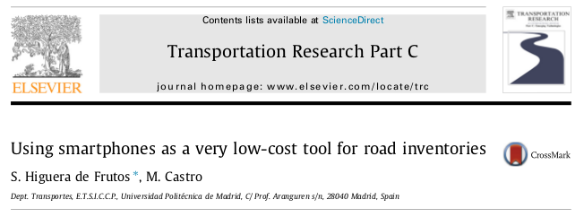
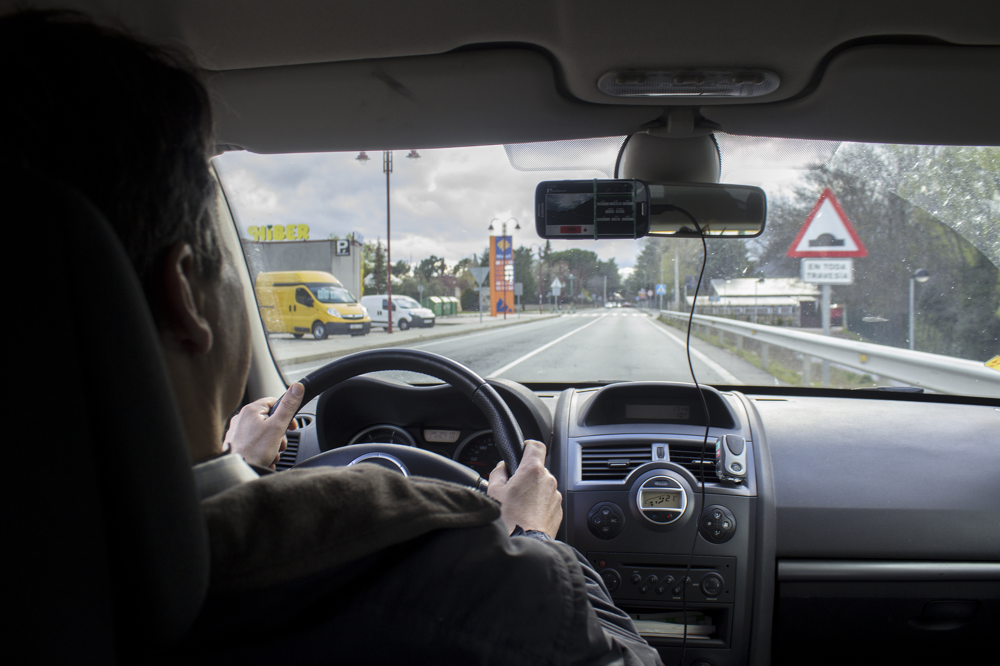
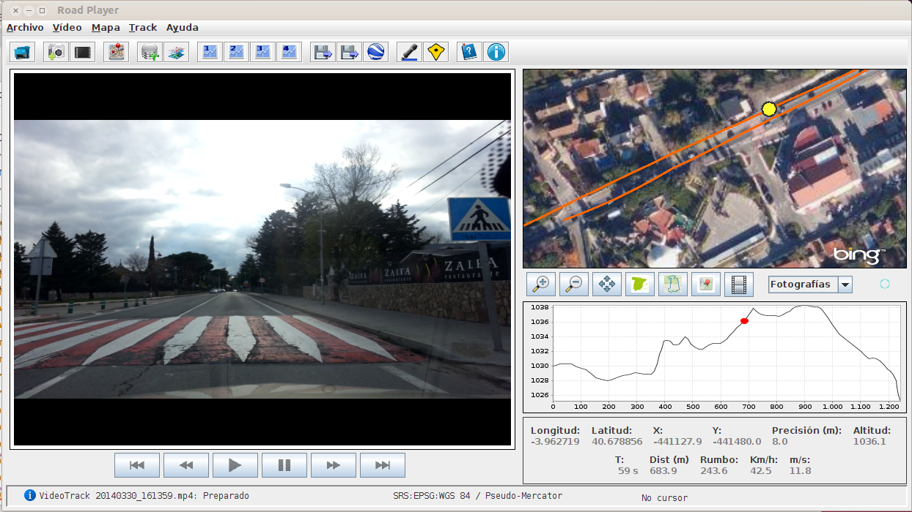
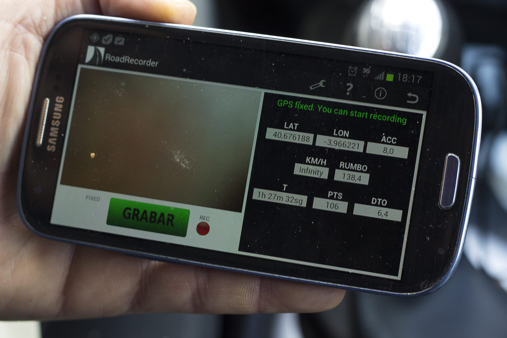
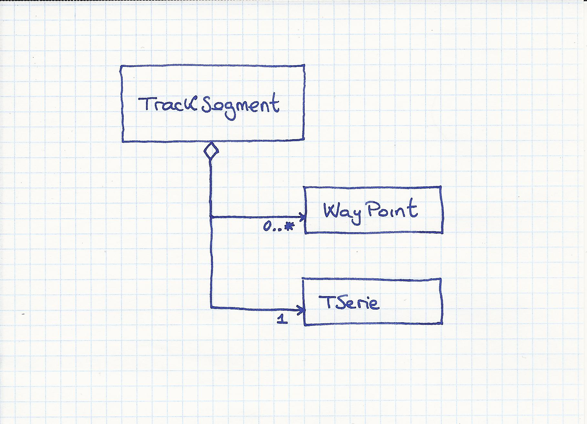
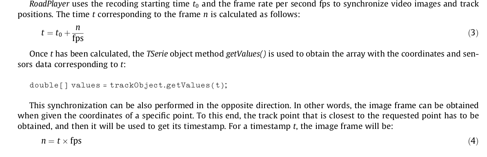
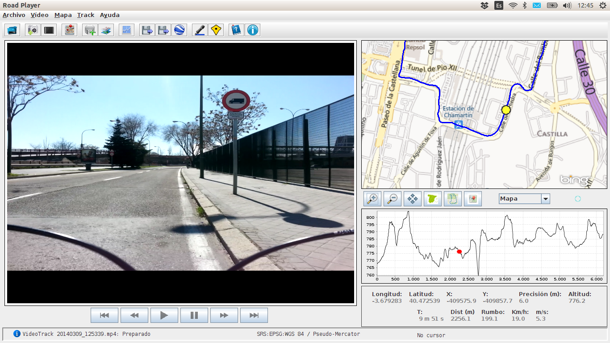
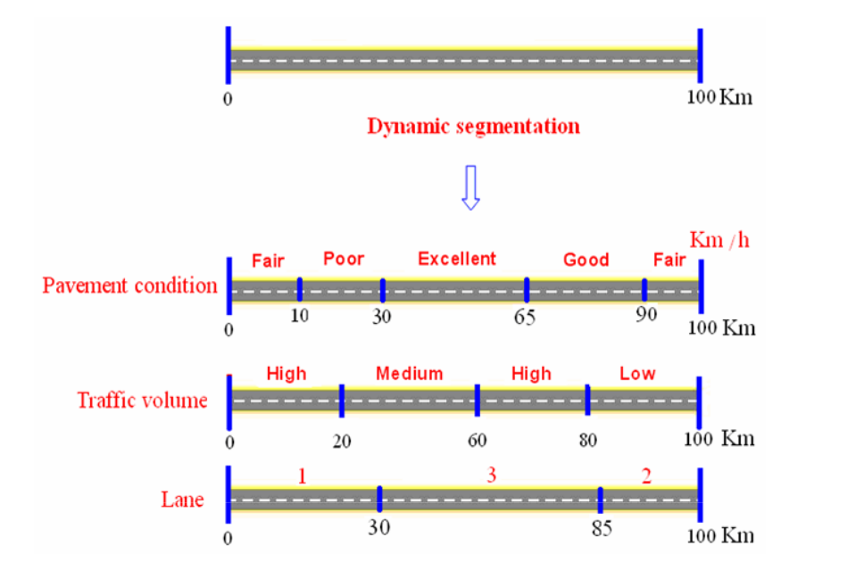

Using smartphones as a very low-cost tool for road inventories
El origen...
Tesina del Master en Sistemas de Ingeniería Civil
UTILIZACIÓN DE LOS SMARTPHONES COMO HERRAMIENTA DE BAJO COSTE PARA INVENTARIOS DE CARRETERAS
Alumno: Santiago Higuera
Tutora: María Castro
Fecha: Julio 2013
Estado del arte: conclusiones (I)
En relación con los inventarios de carreteras
- El cálculo de la geometría no está resuelto satisfactoriamente (Errores del 30% en sistemas automáticos comerciales. (Findley. 2013))
- Tienen costes elevados: planificación, realización, postproceso
- Se adaptan mal a vías no convencionales
- Se adaptan mal a redes con variación dinámica
Estado del arte: conclusiones (II)
En relación con el geoetiquetado
- No existe un estándar para el geoetiquetado de vídeos fotograma a fotograma
En relación con los smartphones
- No se ha encontrado aplicación que aune la grabación de vídeo, la del GPS y la de los sensores
Los Objetivos...
Objetivos de la investigación:
- Aplicación Android que grabe video, GPS y sensores
- Formato de datos para combinar GPS y sensores
- Procedimiento para calcular el eje de la carretera
- Aplicación para visualizar sincronizadamente vídeos, posición del móvil y valor de los sensores
- Aplicación práctica
Los resultados...
- Tesina de investigación
- Publicación en Transportation Research, Elsevier
- Software:
- RoadRecorder
- RoadPlayer
- Tesis doctoral: investigación actual
Publicación
Software desarrollado
|  |  | |
RoadRecorder
RoadRecorder para dispositivos Android

- Grabación sincronizada de:
- Vídeo
- GPS
- Sensores
- Tres ficheros de cada recorrido:
- .mp4 : Vídeo + Sonido
- .gpx : GPS + Sensores
- .csv : GPS + UTM + Sensores
RoadRecorder: Arquitectura
- Lenguaje de programación Android, Java
- Plataforma: Smartphones Android
- Basado en librerías Open Source:
- GPX: GpxParser
- GPS: GpsManager
- Geometría: JTS Topology Suite
- Patrones de diseño
- Test Driven Development
- Control de versiones: Git
- Repositorio de código: https://github.com/shiguera
Formato para datos
SENX, Sensor GPX
<trkpt lat="40.412750" lon="-3.897759">
<ele>748.43</ele>
<time>2013-06-27T13:42:35.35Z</time>
<extensions>
<mlab:bearing>254.92</mlab:bearing>
<mlab:speed>9.86</mlab:speed>
<mlab:accuracy>12.00</mlab:accuracy>
<mlab:ax>-0.347691</mlab:ax>
<mlab:ay>-0.173109</mlab:ay>
<mlab:az>0.662444</mlab:az>
<mlab:pressure>942.38</mlab:pressure>
</extensions>
</trkpt>
TrackSegment
TSerie

Sincronización
RoadPlayer
Aplicación que permite reproducir, operar y analizar los VideoTracks grabados con RoadRecorder
Multiplataforma: Windows, Linux, Mac
RoadPlayer: características
- Reproductor de vídeo
- Vídeo SnapShot
- Cartografía: Satelite, Mapa, PNOA, raster
- Capas vectoriales
- Map Snapshot
- Exportar KML, Shapefile
RoadPlayer: características
- Análisis de los tracks
- Herramienta manipulación de tracks
- Referenciación lineal
- Referenciación por PK's
- Capas de eventos
RoadPlayer: Arquitectura
- Lenguaje de programación Java
- Multiplataforma: Windows, Linux, Mac
- Basado en librerías Open Source:
- Vídeo: VideoLAN
- Geometría: JTS Topology Suite
- Cartografía: Geotools
- GPX, Sincronización: GpxParser
- Gráficos: JFreeChart
- Patrones de diseño
- Test Driven Development
- Compilación con Maven
- Control de versiones: Git
RoadPlayer: aplicaciones
- Levantamiento de estado actual
- Auditorias de trazado en carreteras
- Inventarios en carreteras, vías ciclistas, caminos forestales
- Inspección de redes tras catástrofes, guerras,...
- Preparación ofertas mantenimiento carreteras
- Gestion de vias urbanas en poblaciones
Investigación actual
- Reconstrucción de trazado
- Trazado en planta
- Perfil longitudinal
- Referenciación lineal, segmentación dinámica
- Bases de datos no-SQL
Reconstrucción de trazado

- Reconstrucción en planta
- A partir de curvaturas
- A partir de azimuths
- Reconstrucción en alzado
Referenciación lineal
Conocida una línea es posible referenciar
los puntos del plano
Segmentación dinámica
Segmentación dinámica
Bases de datos No-SQL
- Flexibilidad
- Multiuso
- Multilenguaje
- Curva aprendizaje cero
Conclusiones
El método propuesto:
- Es un método efectivo de bajo coste para realización y/o mantenimiento de inventarios de vías
- Resuelve situaciones en las que serían dificiles o imposibles otros procedimientos
- Eficaz en los casos de intervención rápida
- Util para inspección previa de tramos de carreteras
- Registro histórico del estado de tramos de carreteras
Gracias por su atención
Santiago Higuera de Frutos
Twitter @santiagohiguerahttps://github.com/shiguera
http://softwaredeingenieria.es/roadplayer
http://mercatorlab.com
THE END
http://mercatorlab.com